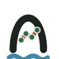

Rutas de camiones GDL
SETRAN ya publica las rutas de 2026, pero sin licencia abierta.
El archivo GTFS está en Ualabee (actualizado el 13 nov 2026, calendario hasta el 31 dic 2026); falta que sea dato abierto con licencia clara.
Pide los datos · Ver qué falta
Abajo, la red completa con los datos abiertos que sí hay (GTFS de SETRAN, archivos del 13 de noviembre de 2026; solo el Área Metropolitana de Guadalajara). Busca una ruta o toca el mapa para ver cuáles pasan cerca.